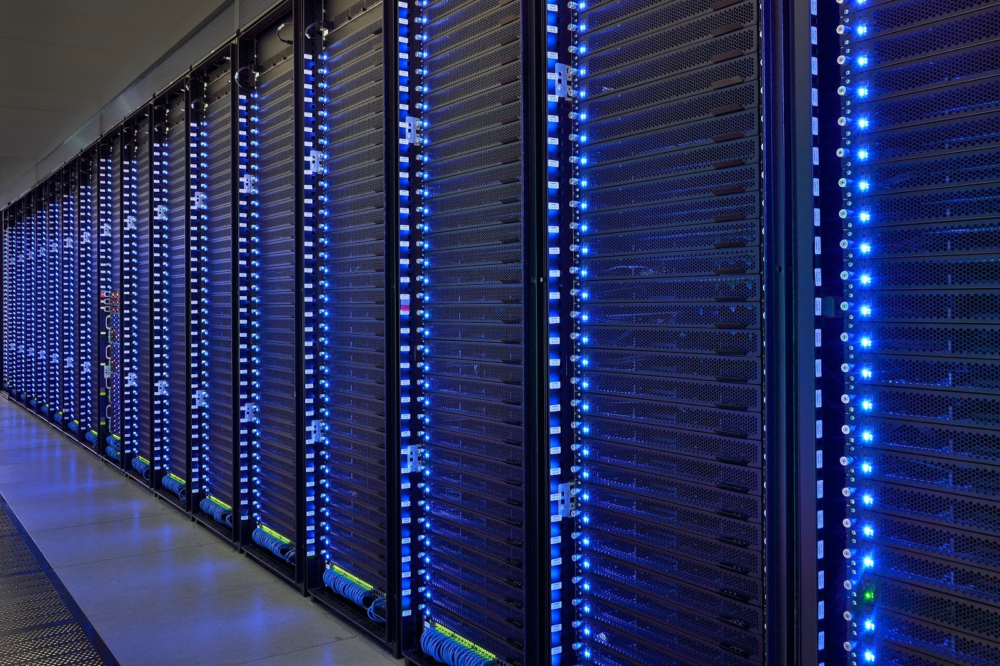

DomashkaPoElectivu

- Работы Дж. Фон Неймана по теории вычислительных машин
- История создания и развития ЭВМ. Поколения
- Микропроцессоры, история создания, миспользование в современном мире
- Cупер-ЭВМ назначение, возможности, принципы построения
- Проект 5-го поколения: замысел и реальность
- Основные правила компьютерной безопасности
Супер-ЭВМ
Супер-ЭВМ — мощные, высокоскоростные вычислительные машины (системы) с производительностью от десятков GFLOPS до нескольких PFLOPS. Супер-ЭВМ выгодно отличаются от больших универсальных ЭВМ по быстродействию числовой обработки, а от специализированных машин, обладающих высоким быстродействием в сугубо ограниченных областях, возможностью решения широкого класса задач с числовыми расчетами.
Развитие суперкомпьютеров идет по следующим направлениям: векторно-конвейерные компьютеры, параллельные компьютеры с общей памятью, массивно-параллельные системы с распределенной памятью, кластерные системы.
Два раза в год формируется официальный список пятисот самых мощных суперкомпьютеров мира – Top500.
В мае 2010 года список Top500 возглавила система Jaguar – Cray XT5-HE, показавшая максимальную производительность в 1,759 PFLOPS (пиковая производительность – 2,331 PFLOPS), созданная американской фирмой Cray Inc. Эта система разработана на шестиядерных процессорах AMD Opteron. На втором месте впервые оказалась китайская система Nebulae компании Dawning с производительностью 1,27 PFLOPS(пиковая - 2,98 PFLOPS). Замыкает тройку лидеров кластер IBM Roadrummer, созданный на блэйд-серверах Blade Center QS22 и процессорах Power X Cell 8i, с максимальной производительностью 1,042 PFLOPS (пиковая производительность 1,375 PFLOPS.
Функциональные возможности, назначение, платформы рабочих станций.
Рабочая станция—однопользовательская система с мощным одним или несколькими процессорами и многозадачной ОС, имеющая развитую графику с высоким разрешением, большую дисковую и оперативную память и встроенные сетевые средства. Ориентация на корпоративное использование и на профессионального пользователя позволяет во многих случаях применять более совершенные и дорогостоящие аппаратные средства.
Рабочие станции, используют те же процессоры и практически не отличаются от ПК по внешнему виду. Однако, присутствует поддержка профессиональной двух- и трехмерной графики и многодисковых конфигураций, большой объем и быстродействие жесткого диска, использование двух процессоров (в старших моделях), применение памяти с коррекцией ошибок. Благодаря этому у них выше производительность, надежность и больше графических возможностей, чем у ПК.
Классификация микро-ЭВМ
Серверы - компьютеры, выполняющие служебные функции в сети(хранение файлов и обеспечение доступа к ним пользователей (клиентов), маршрутизация потоков данных, управление печатью сетевого принтера, обработка писем электронной почты, рассылка факсов и т.д.)
Рабочие станции - однопользовательская система с мощным одним или несколькими процессорами и многозадачной ОС, имеющая развитую графику с высоким разрешением, большую дисковую и оперативную память и встроенные сетевые средства. Ориентируются на профессиональных пользователей.
Персональные компьютеры - однопользовательские микро-ЭВМ, удовлетворяющие требованиям общедоступности и универсальности применения. большинство ПК базируется на х86 процессорах с основной операционной системой из семейства Windows. Эта платформа процессоров является самой распространенной, демократичной, дешевой и универсальной.
Встраиваемые и промышленные компьютеры - входят составным элементом в промышленные и транспортные системы, технические устройства и аппараты, бытовые приборы. Они способствуют существенному повышению их эффективности функционирования, улучшению технико-экономических и эксплуатационных характеристик. В области мобильных и малогабаритных аппаратов традиционно применяются специализированные процессоры, такие как RISC-системы с архитектурой ARM, энергопотребление которых находится на уровне 3 Вт.
Классификация серверов
Файл серверы –хранение данных
Серверы приложений -используются для баз данных и поддержки документооборота
FTP-серверы - для удаленного доступа к данным через Internet
Серверы внешних устройств - печати, сканирования, факсимильной связи
Web-серверы –хостинг web-сайтов
Блэйд-серверы -это модульная одноплатная компьютерная система, включающая процессор и память.
Блэйд-серверы
Организация блейд-серверов основывается на концепции адаптивной инфраструктуры, которая предусматривает гибкость, экономичность и оперативность подстройки под быстро меняющиеся требования пользователей. Blade-сервер – это модульная одноплатная компьютерная система, включающая процессор и память. Лезвия вставляются в шасси с объединительной панелью, обеспечивающей им подключение к сети и подачу электропитания. Это шасси с лезвиями является Blade-системой. Оно выполнено в конструктиве для установки в стандартную 19-дюймовую стойку и занимает в ней 3U, 6U или 10 U. За счет общего использования таких компонентов, как источники питания, сетевые карты, жесткие диски и блоки охлаждения, Blade-серверы обеспечивают более высокую плотность размещения вычислительной мощности в стойке по сравнению с обычными тонкими серверами высотой 1U и 2U.
Преимущества Blade-серверов:
- уменьшение занимаемого объема;
- уменьшение энергопотребления и выделяемого тепла;
- уменьшение стоимости и повышение надежности системы питания и охлаждения;
- повышение удобства управления системой;
- высокая масштабируемость;
- высокая гибкость;
- сокращение количества коммутационных проводов
Кто придумал суперкомпьютер?
Суперкомпьютеры называют «числодробилками» или «числогрызами»: они нужны для супербыстрых вычислений. Главное отличие в том, что обычный компьютер выполняет задачи последовательно, хотя и на высокой скорости — вплоть до доли секунды, поэтому мы этого не замечаем. Суперкомпьютер делает это одновременно и обрабатывает огромный массив данных. Для этого им нужны тысячи супермощных процессоров. В результате вычисления, на которые у мощного игрового компьютера уйдет неделя, суперкомпьютер выполняет за день. Однако важно, чтобы программы работали корректно, с учетом технических особенностей машины. Иначе то, что корректно работает на 100 процессорах, сильно замедлится на 200. Современные смартфоны работают так же быстро, как самый мощный суперкомпьютер 1994 года. Суперкомпьютеры работают на специальном ПО. Например, у Fugaku операционная система Red Hat Enterprise Linux 8 c гибридным ядром, состоящим из одновременно работающих ядер Linux и McKernel. В качестве программных средств используют API — то есть интерфейсы или платформы для программирования — и открытое ПО, которое позволяет создавать виртуальные суперкомпьютеры на базе обычных. Часто суперкомпьютер — это несколько высокомощных компьютеров, которые объединены высокоскоростной локальной сетью. Обычно производительность компьютеров оценивается во флопсах (FLOPS — FLoating-point Operations Per Second) — то есть количестве операций над числами с плавающей точкой в секунду. Для суперкомпьютеров сначала использовали мегафлопсы — MIPS, количество миллионов операций в секунду, а с 2008 года петафлопсы — то есть количество миллионов миллиардов вычислений в секунду. К примеру, у суперкомпьютера Fugaku производительность составляет 415 петафлопс, а у Summit — 148.
Где и для чего используют суперкомпьютеры?
Главная задача суперкомпьютеров — выполнять максимум вычислений за минимум времени. Это полезно для многих областей: начиная от создания лекарств и заканчивая разработками новых продуктов и технологий,
Есть суперкомпьютеры, которые работают с одним-единственным приложением, которое задействует всю память. Например, для прогнозирования изменений погоды и климата или моделей ядерных испытаний. В будущем это позволит отказаться от реальных испытаний опасного оружия и исключить риски взрывов или утечек при долгом хранении.
Но суперкомпьютеры не просто вычисляют, а моделируют реальность. То есть просчитывают все возможные варианты развития событий и строят прогнозы. Поэтому с их помощью астрономы и астрофизики воспроизводят самые разные события и процессы во Вселенной.